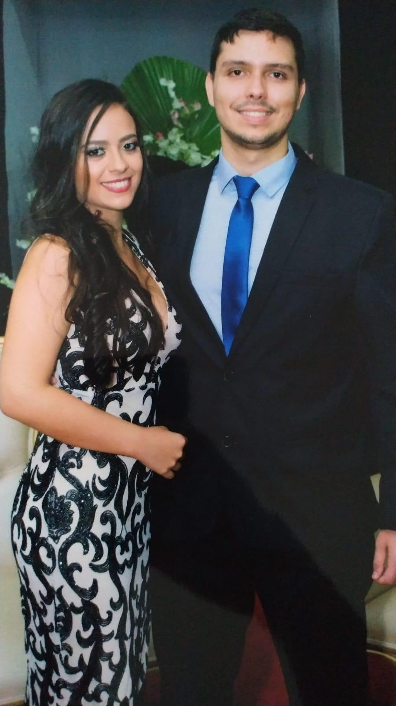

Uma breve história...
Sempre tive o sonho de sair do ensino médio e ir direto para faculdade. Mas, nunca imaginei que minha vida poderia mudar tanto em questão de dois anos.
Familia, amigos, faculdade... tudo se mostrou mais unido e ao mesmo tempo mais afastados fisicamente, parece estranho ler isso, concordo,
mas ao decorrer da história, espero poder passar o que estou sentindo no momento...
E em Agosto a mais nova integrante da familia nasceu.
Neste mesmo ano consegui ingressar na faculdade, um dos meus maiores sonhos. No entando, a vida de graduanda foi um pouco diferente. As aulas remotas, sem ir a universidade, sem ter esse espaço que te faça sentir que esta finalmente na faculdade e no curso que deseja. Mas, posso garantir que tudo teve um propósito, ganhei professores que nunca imaginaria ter *, ganhei novos colegas e ensinamentos que vou levar pro resto da vida. Estou muito feliz com tudo que aconteceu comigo nesses ultimos anos e poder ter todas as pessoas que amo perto de mim é inexplicável. Peço a todo momento que Deus nos livre de todo o mau que este virus, infelizmente, vem causando ao mundo e conforte todas as familias desfeitas. Espero que logo possamos voltar ao normal.
2019-
ano que terminei o ensino médio, aquela angústia de fazer o Enem e poder entra na faculdade não paravam de percorrer minha cabeça. No entanto, ir para um vestibular sem preparação fisica e psicológica não daria certo. Dito e feito, minha nota não foi o sufiente para passar, por ser minha primeira experiência naquilo tudo, não saberia o que estava por vir. Mas, aquilo não pareceu ser o fim do mundo para mim. Poderia estudar e fazer de novo no ano seguinte.2020-
ano de conquistas, desastres, milagres, noticias boas e ruins... O ano começou de uma maneira inesquecível: a formatura do meu namorado no curso de Ciencia da Computação. No entado, uma semana após a formatura, a noticia da covid-19 foi se espalhando pelo mundo e chegou ao Brasil... O que parecia ser coisa de um ano, permeou bem mais do que esperávamos. Mas, pessoalmente, meu ano foi bom, primeiro dia dos namorados, notícias que viriam a ser a esperança e a ansiedade da família: minha irmã estava grávida.E em Agosto a mais nova integrante da familia nasceu.
2021-
Tudo o que eu havia sonhado até 2019 de certa maneira se desfez, a partir de 2021 eu sabia que nada seria igual a aquele pensamento anterior.Neste mesmo ano consegui ingressar na faculdade, um dos meus maiores sonhos. No entando, a vida de graduanda foi um pouco diferente. As aulas remotas, sem ir a universidade, sem ter esse espaço que te faça sentir que esta finalmente na faculdade e no curso que deseja. Mas, posso garantir que tudo teve um propósito, ganhei professores que nunca imaginaria ter *, ganhei novos colegas e ensinamentos que vou levar pro resto da vida. Estou muito feliz com tudo que aconteceu comigo nesses ultimos anos e poder ter todas as pessoas que amo perto de mim é inexplicável. Peço a todo momento que Deus nos livre de todo o mau que este virus, infelizmente, vem causando ao mundo e conforte todas as familias desfeitas. Espero que logo possamos voltar ao normal.



*Sou muito grata por todos professores que tive nesse primeiro período, por ensinarem com tanto carinho. No cenário atual do mundo, se não houvesse esse escape de poder ter com quem contar na faculdade, creio que muitos alunos não dariam conta, vocês professores foram ótimos para nós alunos, em todas as aulas demonstrando em pequenos gestos a felicidade e o carinho de exercerem está profissão. Muito obrigada!!